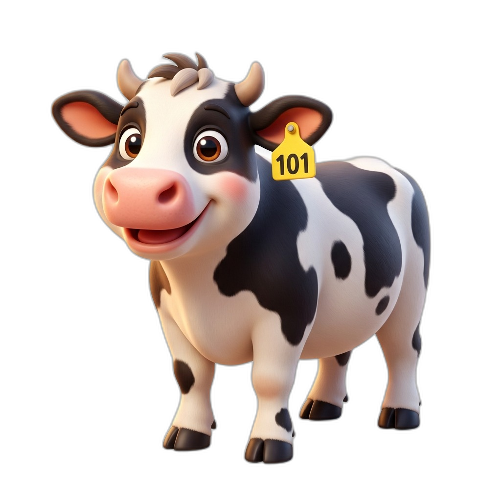

Healthier Herds Start with Early Detection.
Support better udder health with early mastitis screening, non-invasive image records, and rapid veterinary follow-up — all united in one intelligent platform.

The Moving Landing Experience
Watch the cow travel seamlessly across the three core moments of BoviCare — exactly like the reference flow, powered by smooth web motion.
See How Early Mastitis Triage Works
Experience how BoviCare bridges symptoms recorded in the dairy shed directly with veterinarian review to stop infection before milk loss.
Select Clinical Scenario:
Built for the Barn. Trusted by the Clinic.
Designed specifically to address the daily realities of dairy farmers in the shed and licensed veterinarians managing herd health.
For Dairy Farmers
Easy everyday herd tracking & instant photo capture
- 1MB Auto-Compressed Cow Photos: Snap camera photos of cattle and udders; auto-compressed to WebP for fast upload even on 3G rural networks.
- Cattle Health & Yield Profiles: Track individual ear tags, lactation stages, and daily milk liters in one organized ledger.
- Automated Milk Withdrawal Alerts: Never ship contaminated milk. Live countdown timers ensure full antibiotic withdrawal compliance.
- Bilingual Marathi & English: Full multi-language accessibility for regional Indian dairy farming communities.
For Attending Veterinarians
Priority triage queue & authorized digital prescription plans
- Prioritized Clinical Queue: Immediately filter critical, urgent, and routine cases across member farms from any browser.
- 4-Quarter Udder Localization: Isolate affected quarters (Left Front, Right Front, Left Rear, Right Rear) to guide targeted treatment.
- Standardized Prescription Protocols: Issue evidence-based medication instructions, routes (intramammary, IM, oral), and exact withholding hours.
- Hardened Row Level Security (RLS): Clinical data privacy guarantees that only authorized veterinarians access clinical case histories.
How BoviCare Works in 4 Steps
From the morning milking checkup to veterinary prescription and safe recovery.
Register Herd & Cattle
Onboard each cow or buffalo with ear tag number, breed, lactation cycle, baseline daily milk yield, and profile photo.
Record Symptoms & Photo
During routine milking, log rectal temperature, milk appearance (clots/flakes), teat firmness, and snap an udder picture.
AI Triage & Case Alert
The platform evaluates vital indicators, localizes affected quarters, flags subclinical risks, and routes the case to your vet.
Vet Prescription & Recovery
Attending vet reviews records, prescribes dosage & route, and the system monitors milk withdrawal countdown until safe.
Less Discarded Milk
Catching mastitis at subclinical stage saves up to ₹25,000 per infected cow per lactation.
Vet Response Window
Digital triage queue replaces chaotic phone calls with structured clinical assessments.
Zero Residue Violations
Automated milk withholding timers protect dairy bulk tanks from antibiotic contamination.
Client-Side WebP
Strict free-tier compliance with automatic in-browser image compression.
Trusted on the Farm & in the Clinic
Real feedback from dairy producers and practicing veterinarians using BoviCare.
"Before BoviCare, by the time we noticed swelling or clots in the bucket, the cow had already lost half her lactation yield. Now, logging a quick temperature and CMT paddle score alerts our doctor before permanent udder damage occurs."
"The quarter-specific localization and structured symptoms give me exact clinical context before I even arrive on farm. Being able to prescribe intramammary infusions with automated withholding countdowns has eliminated antibiotic residue issues."
Ready to Protect Your Herd?
Join forward-thinking dairy farmers and veterinary professionals improving udder health, milk yield, and livestock welfare.